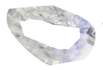
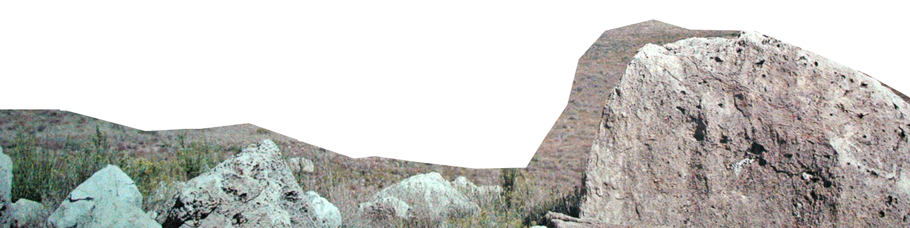

Teun (April ’75) first picked up the drums by the age of eight. After two summer courses with drummer Dre Pallemaerts he went to the Conservatory of Brussels where he was taught by Hans Van Oosterhout. Since graduating from this school in 1999, he became a very demanded musical ‘mercenary’. His search for a personal touch and wanting to explore all possibilities of playing drums, his lack of boundaries and trying to find fresh sounds in collective improvisation made him work with countless bands and musicians. As initiator and motor of his own bands, he is on a constant search of interesting band settings and musical output since 2005. With Bruno Vansina he founded the label Rat Records in 2003 and together with his partner Lien Van Steendam he runs the artist workplace Werkplaats Walter since 2016.
Prizes
* The Jazz Hoeilaart first Prize with Alexi Tuomarila (2000)
* Tremplin jazz 1st Prize with Alexi Tuomarila (2003)
* Nominated with the Harmen Fraanje Trio in Dutch Jazz competition. (2003)
* Tremplin jazz 1st Prize with Pascal Schumacher (2004)
* The Klara Muziekprijs with Jef Neve for their record” it’s gone”
* Teun was nominated in category best musician for the national Belgian “Zamu-awards” (2006)
* First Prize of the Granada Jazz competition with the Alexi Tuomarila 4tet (2006)
* Tremplin Jazz first Price with The Christian Mendoza Band (2010)
* The Jazzmozaïek Award 2013, given to musicians who get noticed for expansion, rejuvenation and renewal of jazz music
Press Quotes
“Alexi Tuomarila has a strong rhythmical scene. You can hear sentences with a beginning and an end, punctuated by rhythmic accents that pull on Teun Verbruggen’s great groove”
Brad Mehldau liner notes on the 02 album of Alexi Tuomarila
“Neve's originals are like musical journeys; you start off here and end up half a mile away over there. His trio (comprising Piet Verbist on bass and Teun Verbruggen on drums) shape and shade the music with powerful rhythms.”
Stuart Nicholson - The Observer
“Teun Verbruggen deserves special mention for his wide ranging abilities, even if he does copy mercilessly from New York Drummer Jim Black on Uri Caine’s Snaggletooth”
John Corbett – Downbeat Magazine
“...Verbruggen , with ‘v’ for versatile. Most boundaries mean nothing to him, he’s constantly in search of new or different ways to approach the drums and as a child of his times, he’s wide open for a wide range of styles.”
Jazz Middelheim 25th Jubilee edition
“Psychoscout is a great album : “Hard Boiled Cool meets Texas Avery”. A lot of great solo’s but especially: the Virtuoso Teun Verbruggen, who proves in less than seven minutes that he’s able to do anything.”
www.goddeau.com - Guy Peeters
“The Jef Neve trio has an extraordinary high level of interaction and playing. Teun Verbruggen has a very big role in this interaction, plays in a very inviting way and has a very high level approach to the drums”
Kwadratuur
“Flanders’ own Chris Corsano (Bjork’s drummer, known for his very innovative style, ed.) is named Teun Verbruggen. He keeps on surprising with his very fresh and innovating drumming”
Kraak

BANDS
As a Leader
Warped Dreamer
The Bureau Of Atomic Tourism
Chasing Penguins
Chaos Of The Haunted Spire
Othin Spake
The Potash Corporation of Saskatchewan
Blind Io
Cram ration
Duo à L'encre
Teun Verbruggen/Nathan Wouters/John Ruocco/Nicola Andrioli
As Sideman
Bruno Vansina projects
Flat Earth Society
Serge Lazarevitch/Nic Thys/Teun Verbruggen/Ben Sluys
Orlando
Small World
Frank Vaganée/Sam Gerstmans/Teun Verbruggen
Northern Escorts
Orchestra Nationale De la Luna
Past Projects
Pascal Shumacher 4tet
Christian Mendoza Band
Jef Neve trio
Igor Géhenot trio
Jambangle
Drifter
Streams
Caca
Too Noisy Fish
Omun
Nozzle Slag
Toots Tielemans band
Melanie De Biasio band
Qu4tre
Futhark
Gowk
Le Sence Du Désordre
Sam Vloemans 4tet
Harmen Fraanje trio
Gatecrash
Alexi Tuomarila trio
Keenroh XL
